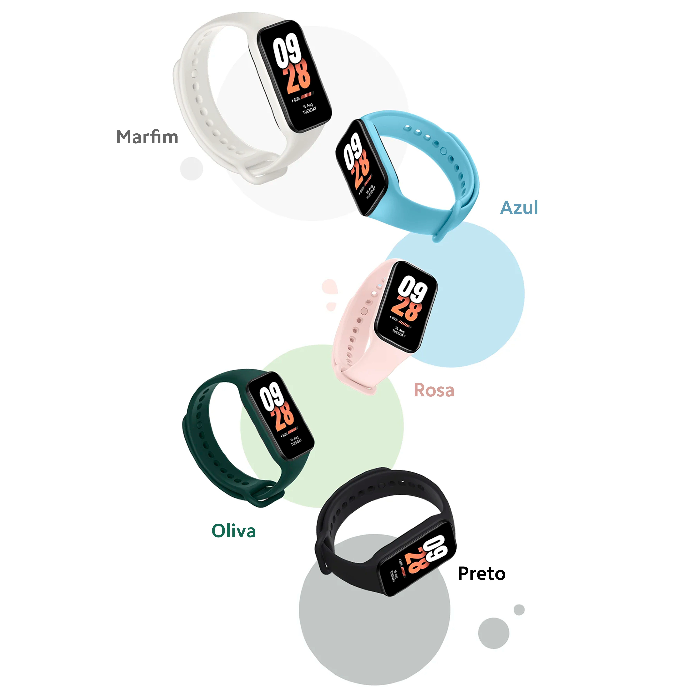

Marcante e funcional. Com 5 elegantes braceletes de silicone, você pode combinar facilmente a pulseira com o seu visual, seja ele moderno, casual, esportivo ou descolado.
*A Xiaomi Smart Band 8 Active vem com um bracelete preto ou rosa, e somente os braceletes marfim, azul e oliva podem ser adquiridos separadamente.
Confortável de usar, com material em silicone macio e design de alça curvada. Ele não tem apenas uma boa aparência, mas também uma boa sensação.
Bracelete leve de 11,5g
Confortável de usar
1. Insira uma extremidade da pulseira na parte frontal do bracelete.
2. Pressione a outra extremidade com o polegar para empurrar completamente a pulseira para dentro do espaço central do bracelete.
1. Remova a pulseira de seu pulso.
2. Segure em cada extremidade e puxe o bracelete até ver um pequeno espaço entre a pulseira e o bracelete.
3. Use o dedo para retirar a pulseira do espaço central do bracelete.